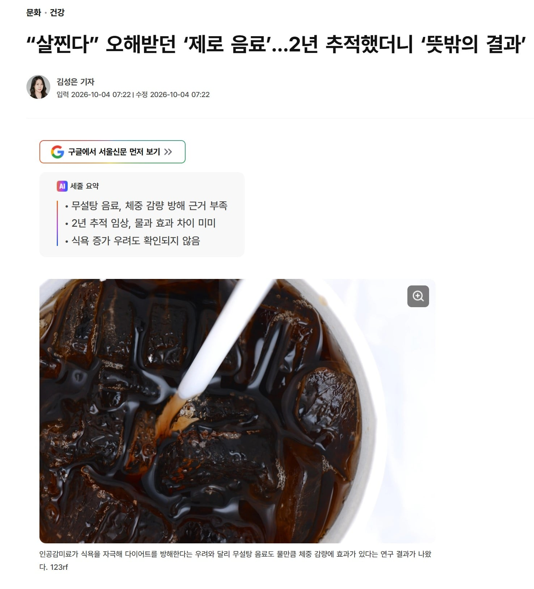

다이어트 중 무설탕 음료를 마셔도 물을 마신 것만큼 체중 감량에 효과가 있다는 연구 결과가 나왔다. 인공감미료가 오히려 식욕을 자극해 다이어트를 방해한다는 의구심이 있었으나, 실제 임상 시험 결과 체중 감량 효과는 물을 마신 집단과 사실상 다름이 없었다.
한 그룹은 250명, 물만 마시게 하고 나머지 한 그룹 250명은 맨날 제로 음료 660ml 마시게 함.
그 결과 사실상 물 마신거랑 차이가 없다고 함.
뭔가 더 먹게된다 < 원래도 처 먹던 놈이라는 거임
근데 신장엔 안좋지 않나